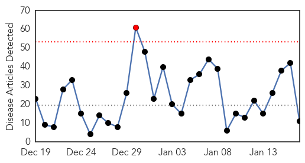
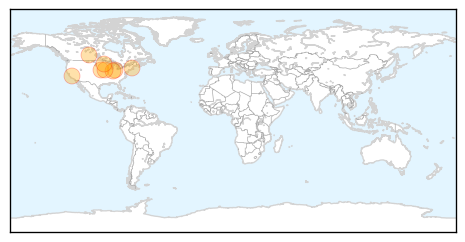
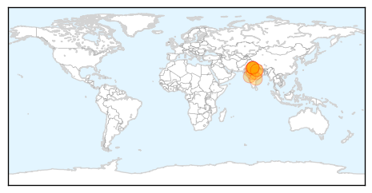
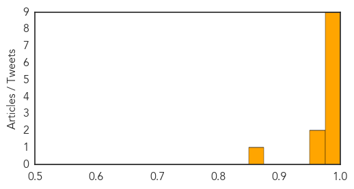

Influenza
30-Day Web Trend
1 alerts, 0 warnings

30-Day Twitter Trend
0 alerts, 0 warnings

Article Locations
Article Confidences

Top Articles:
- 0.997
- 2015 flu vaccine has failed, but health authorities recommend antivirals
- 0.997
- Flu hits Zeman hard, but overall cases down in county
- 0.996
- Health beat: Did flu patients receive shots?
- 0.996
- Indiana reports severe flu season, 85 deaths to date
- 0.984
- Flu season's in full swing
- 0.983
- Higher than normal cases of influenza within the health region
- 0.975
- Flu in city peaks; state rate still up, officials say
- 0.948
- Keeping influenza at bay
- 0.916
- Popular medical students 'should get flu jab first'
- 0.849
- Flu canceled honeymoon period for new Suburban/DeGraff medical chief
- 0.786
- Infected student’s condition stabilized, but related cases still unknown
Top Tweets:
-
No tweets found for Jan 17, 2015
Swine Flu
30-Day Web Trend
2 alerts, 2 warnings

30-Day Twitter Trend
0 alerts, 0 warnings

Article Locations
Article Confidences
Top Articles:
- 1.000
- Read Health News & Articles at TheHealthSite.com
- 1.000
- Eight swine flu cases detected in Haryana
- 0.999
- Checking swine flu to be major challenge for MP govt in New Year
- 0.998
- Swine flu cases in Hyderabad touch 111 in January
- 0.998
- Youngster dies of swine flu, three deaths in Jan
- 0.998
- Indiablooms - First Portal on Digital News Management
- 0.996
- Swine flu: Nadda asks people not to panic, says Health Ministry ready to tackle situation
- 0.988
- First case of H1N1 virus reported in Indore
- 0.984
- Swine flu: Health ministry asks people not to panic
- 0.966
- Swine flu: Health ministry asks people not to panic
- 0.960
- Health ministry asks people not to panic , AniNews.in
- 0.862
- First Swine Flu Deaths in Uttar Pradesh, Health Department Gets Into Action
Top Tweets:
-
No tweets found for Jan 17, 2015